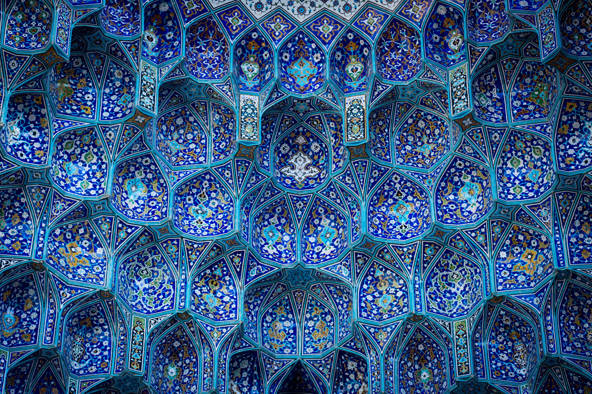
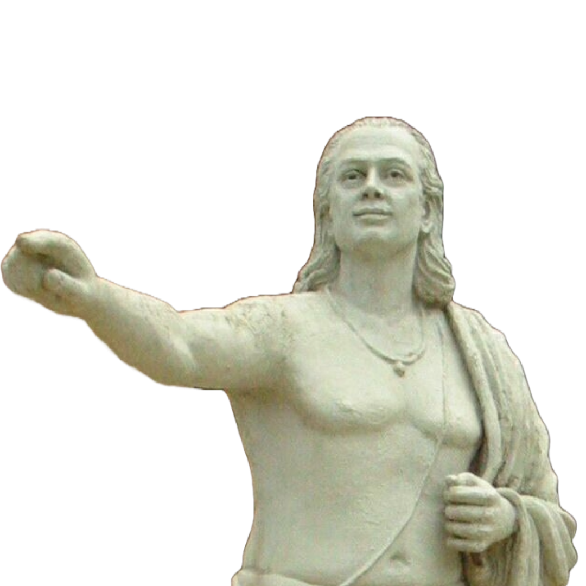
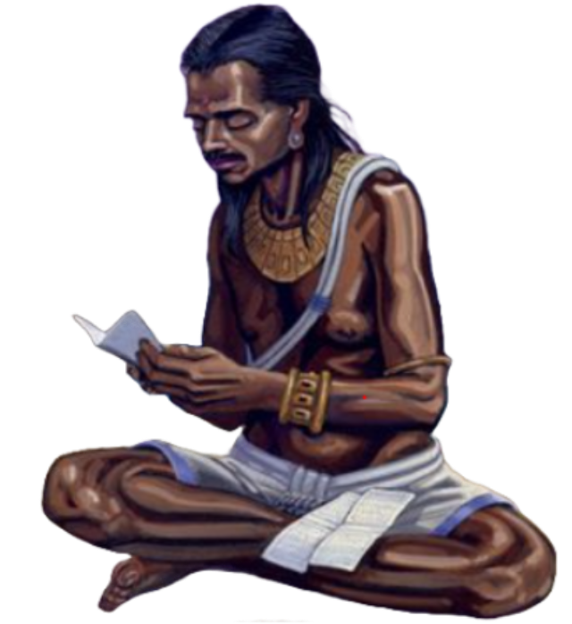
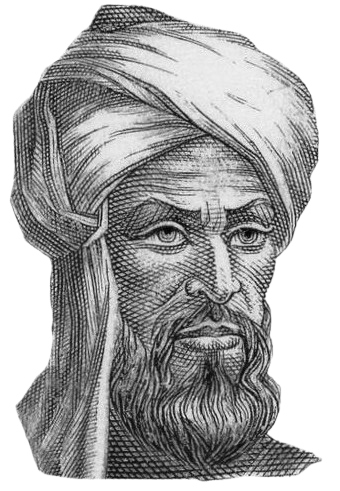
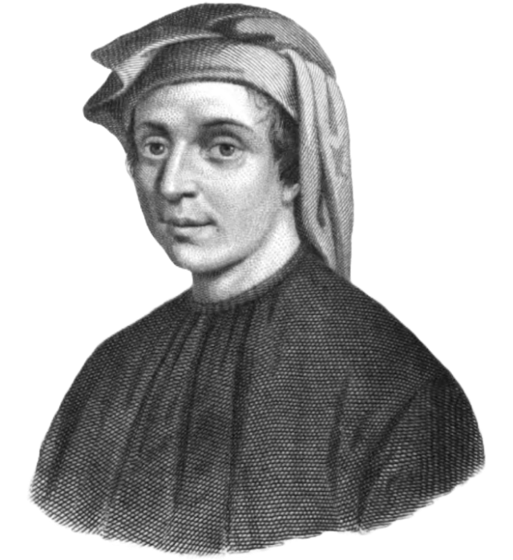

400 d.Hr. - 1500 d.Hr.

Evul Mediu a fost o perioadă de tranziție între Antichitate și Renaștere, în care matematica a supraviețuit și s-a dezvoltat în principal în India și în lumea islamică. În timp ce Europa trecea printr-o perioadă de stagnare intelectuală relativă, în alte regiuni ale lumii matematica a cunoscut o înflorire remarcabilă. Matematicienii indieni și arabi au contribuit esențial la dezvoltarea algebrei, trigonometriei și conceptului de zero. Aceste cunoștințe au fost ulterior transmise în Europa, jucând un rol crucial în renașterea științifică europeană.
Aryabhata (476 – 550) a fost un matematician și astronom indian, considerat unul dintre pionierii matematicii clasice din India. A introdus concepte fundamentale precum valoarea pozițională a cifrelor și utilizarea unui simbol pentru zero. A oferit metode ingenioase pentru calculul rădăcinilor pătrate și cubice, precum și formule de trigonometrie sferică. O curiozitate despre Aryabhata este că a susținut ideea că Pământul se rotește în jurul axei sale, cu mult înainte de Copernic, și a propus o valoare a lui π foarte apropiată de cea reală.

Brahmagupta (c. 598 – 668) a fost un matematician și astronom indian, autor al lucrării „Brahmasphutasiddhanta”, un text esențial pentru matematica medievală. A fost primul care a formulat reguli clare pentru operarea cu zero și numere negative, dezvoltând în același timp formule pentru soluționarea ecuațiilor pătratice și pentru suma progresiilor aritmetice. Curios este faptul că el considera zero ca un număr în sine, un pas major în evoluția matematicii, și că lucrarea sa a influențat gândirea matematică arabă și europeană ulterioară.

Al-Khwarizmi (780 – 850) a fost un matematician persan din Casa Înțelepciunii din Bagdad, considerat părintele algebrei. Lucrarea sa „Al-Kitab al-Mukhtasar fi Hisab al-Jabr wal-Muqabala” a introdus metode sistematice de rezolvare a ecuațiilor și a dat numele ramurii „algebră”. Algoritmul, concept fundamental în informatică, își are denumirea derivată din numele său. Un fapt interesant este că lucrările sale au fost traduse în latină în Evul Mediu, influențând profund dezvoltarea matematicii în Europa occidentală.Al-Khwarizmi a fost, de asemenea, un pionier în utilizarea cifrelor arabe, care au înlocuit treptat sistemul roman în Europa.

Fibonacci (1175 – 1250), cunoscut și ca Leonardo din Pisa, a fost un matematician italian care a introdus în Europa sistemul de numerotare arab și a popularizat șirul ce îi poartă numele.În lucrarea sa „Liber Abaci”, a prezentat numeroase aplicații ale sistemului numeric pozițional zecimal și a oferit metode de calcul avansate pentru vremea sa. De asemenea, a studiat creșterea populației de iepuri, ducând la apariția șirului Fibonacci.Un detaliu fascinant este că Fibonacci a fost influențat de călătoriile sale în Africa de Nord, unde a învățat matematica arabă – experiență ce a avut un impact enorm asupra evoluției științei europene.
